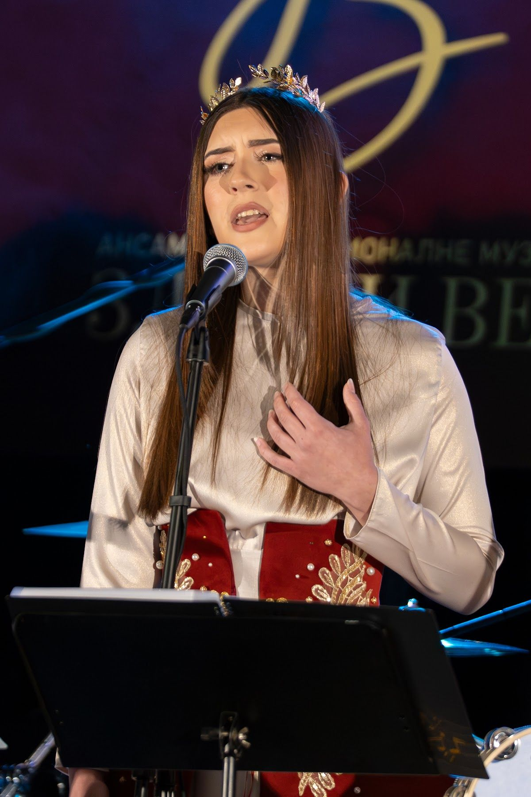

The next stitch in the golden thread
From Zlatni Vezić, through Zlatne Niti, to Zlatni Vez.
Through our children's ensemble, Zlatni Vezić, and youth ensemble, Zlatne Niti, we create a bridge between generations, giving children growing up far from their ancestral homeland an opportunity to discover and embrace the music, language, and traditions of their heritage.
Register onlineChildren's Ensemble · Ages 4–9 Дечји ансамбл
Zlatni Vezić
Little Voices. Deep Roots.
Zlatni Vezić is a children's traditional music ensemble and part of the Zlatni Vez family, created to introduce our youngest generations to the beauty of Serbian songs, language, and cultural heritage.
Through singing, rhythm, play, and making music together, children develop their musical ear, vocal skills, confidence, and sense of belonging. They learn to listen to one another, sing as a group, and discover the stories behind the songs they perform.
Special attention is given to the meaning and origins of traditional songs, unfamiliar Serbian words, and the customs passed down through generations.
Vocal development and ensemble singing form the foundation of the program. Children who already study an instrument may also participate in instrumental performances according to their experience and abilities.
Our goal goes beyond teaching children how to sing. We want them to grow up with a love for their heritage, meaningful friendships, and a lasting connection to their roots.
- Rehearsals
- Thursdays, 6:00–7:00 PM
- Location
- St. Nicholas Serbian Orthodox Church, Main Hall, Lyons, Illinois
Growing From Our Roots. Carrying Tradition Forward.

Youth Ensemble · Ages 10–18 Омладински ансамбл
Zlatne Niti
Threads That Connect Us to Our Roots and Lead Us Into the Future.
Zlatne Niti is a youth traditional music ensemble established within Zlatni Vez, offering young people an opportunity to develop their musical abilities, artistic expression, and connection to Serbian cultural heritage.
The program focuses on vocal technique, ear training, rhythm, harmony, and ensemble singing, along with a deeper understanding of the songs being performed.
Through traditional, spiritual, and contemporary ethno music, young members explore diverse musical expressions, the historical and cultural background of songs, and the importance of preserving heritage in today's world.
Members who already play an instrument may incorporate their skills into ensemble performances, learning musical collaboration and shared responsibility.
Beyond musical education, Zlatne Niti encourages confidence, discipline, friendship, creativity, and a strong sense of community. Through rehearsals and public performances, young musicians gain valuable stage experience and become active guardians of their cultural heritage.
- Rehearsals
- Thursdays, 6:00–7:00 PM
- Location
- St. Nicholas Serbian Orthodox Church, Main Hall, Lyons, Illinois
From Zlatni Vezić, Through Zlatne Niti, to Zlatni Vez.

Registration Упис
Register your child online
Fill in the short registration form for Zlatni Vezić or Zlatne Niti. Questions? Write to us at info@zlatnivez.org
Gallery Галерија